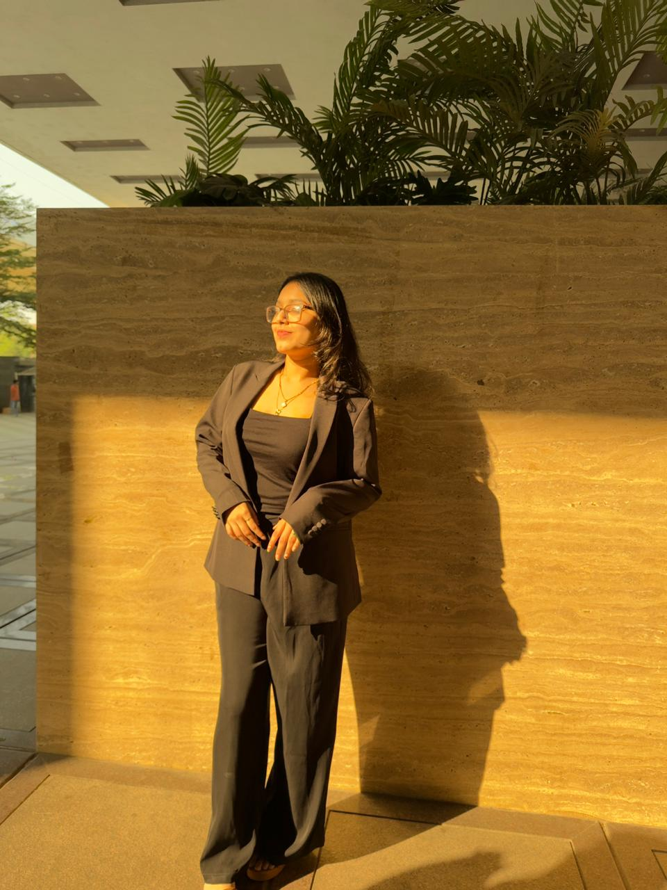

Field notes
Psychology student & creative generalist
I'm Nehal — exploring the space where human behaviour, culture and creative expression meet.
↓02 — Selected practice

The body
remembers.
A growing interest in neuroscience, memory and the stories we carry through movement.
Choreography, hosting, event-making and the art of making a room feel alive.
03 — A little context
A psychology student at NMIMS, collecting questions about people, performance and the quiet forces that shape us.
Now
Studying the neurological factors behind psychological wellbeing while staying close to the creative work that energises me.
Always
Looking for generous collaborators, interesting rooms and a reason to make something a little more human.
04 — Start a conversation